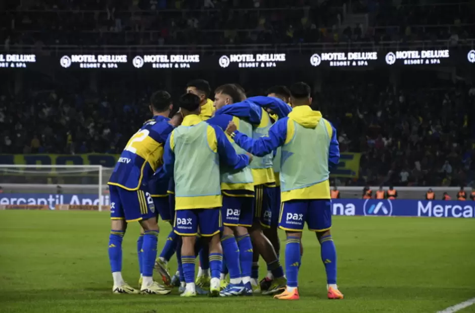
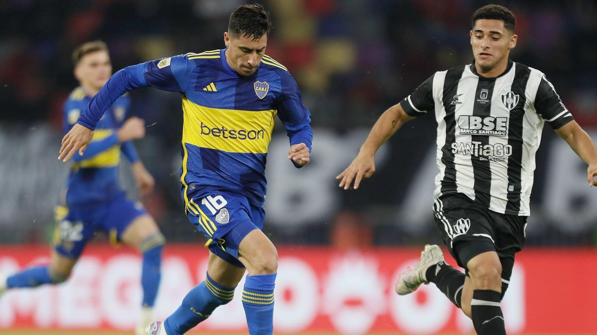
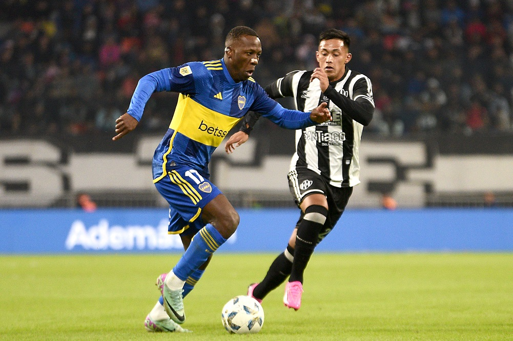

Boca le gana un partidazo a Central Córdoba
Boca le dió vuelta un 2 a 0 a Central Córdoba.
Tras irse al descanso perdiendo 2 a 0, con errores defensivos que un equipo de primera división no debería tener, el equipo de Martinez reaccionó y dió un segundo tiempo para el recuerdo.
En el primer tiempo, con goles de Atencio (3´) y Sanabria (45´+2), el ferroviario tomaba ventaja y se iba con un resultado cómodo al descanso. Pero se ve que la charla del entretiempo del entrenador Diego Martinez surgió efecto, ya que con goles de Equi Fernández (47´, 90´+6) y de Miguel "La Bestia" Merentiel (52', 80´), el conjunto Xeneize da vuelta un partido para la historia.
Un partidazo de Ignacio "Equi" Fernández, haciendo dos goles y dando una asistencia además de haber sido clave defensivamente. Sacó un promedio de 9,4 y eso ayudó a que sea llamado de la selección Argentina sub 23 para jugar los juegos olímpicos y quedar en evaluación para jugar la Copa América.

En otras noticias, Luis Advíncula se lesionó y Boca suma otro más a la lista junto a Rojo, Lema, Blondel, Anselmino, Figal y Zeballos. Con el 80% de la defensa lesionada, ¿será capaz Boca de llegar a un acuerdo con el Jóven Valentini?
 Volver a inicio